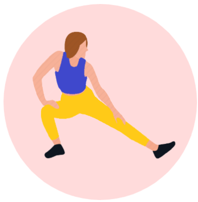

Fitness
&Health
首頁
了解身體
動起來
運動分類
居家運動
大口吃
熱量PK賽
聯絡我們
首頁
了解身體
動起來
運動分類
居家運動
大口吃
熱量PK賽
聯絡我們
臀腿
腹部
上身
有氧
間歇
伸展
針對肌群: 大腿內側
特色: 不必跳躍、深蹲，優雅的折磨沉睡已久的內側肉
強度:
貼心提醒: 超過極限時可以側躺，照樣有效燃燒
針對肌群: 臀部、大腿內外側、小腿
特色: 大量深蹲，極致燃燒整條腿和臀部
強度:
貼心提醒: 記得膝蓋不要超過腳尖，深蹲時背部挺直、膝蓋不要內縮
針對肌群: 臀部
特色: 使用翹臀圈加強臀部訓練，以免訓練成腿部肌群，沒有讓人害怕的深蹲，一路躺到尾
強度:
貼心提醒: 腰部不要過於用力，胸腹腿應呈現一直線，過程中務必有意識的用臀肌發力
針對肌群: 臀部
特色: 不用翹臀圈，不用深蹲，對膝蓋友善
強度:
貼心提醒: 跪姿做驢子踢等動作的過程中切忌身體重心歪斜，記得保持脊椎直線並縮緊小腹
針對肌群: 大腿內外側、蘿蔔小腿
特色:適合初學者，有休息時間，Emi會不斷鼓勵
強度:
貼心提醒: 深蹲等動作不求快，重心穩而姿勢標準更能正確訓練到針對的肌群唷！
針對肌群: 大腿內、外、後側以及臀部
特色: Coffee會先講解再開始動作，有來賓跟著大家一起受苦XD
強度:
貼心提醒: 不要把自己的腿甩來甩去，適度用核心的力量收緊，穩住重心!
針對肌群: 腹部
特色: 想要有明顯的腹肌，體脂低是關鍵，影片兼具肌力訓練以及有氧燃脂
強度:
貼心提醒: 抬起脖子能夠更針對腹部肌群發力，隨時保持背部貼地避免下背受傷
針對肌群: 腹部
特色: 全方位訓練，高強度到棒式變休息
強度:
貼心提醒: 記得膝蓋不要超過腳尖，深蹲時背部挺直、膝蓋不要內縮
針對肌群: 腹部(馬甲線)
特色: 針對側腹部，同時考驗手臂的肌力
強度:
貼心提醒: 挑戰蜘蛛棒式動作之前，確保基本棒式動作可以撐過60秒避免腰背先受傷
針對肌群: 腹部
特色: 節奏快時間短，3min立即有感
強度:
貼心提醒: 上半身不隨意晃動，核心保持收緊，別因為節奏快而搶快，動作標準最重要
針對肌群: 下腹部
特色: 有休息時間，每個動作開始之前有講解畫面，節奏相較於Pamela比較慢
強度:
貼心提醒: 反向捲腹記得由核心發力，初學者容易使用腰力代償，請斟酌服用！
針對肌群: 腹+腰部
特色: 全程站姿，腰背部不容易受傷，適合初學者
強度:
貼心提醒: 動作簡單，但記得收緊腹部，有意識的使用核心發力，才能有效訓練到腹肌
針對肌群: 背部
特色: 一個啞鈴或一袋重物即可，有間隔休息，可以自身程度調整負重
強度:
貼心提醒: 別聳肩，手肘緊貼身體，不甩動啞鈴，慢動作更能精確的訓練到背部肌群!
針對肌群: 背部、手臂、胸
特色: 徒手訓練，不必任何器具
強度:
貼心提醒: 海豚棒式盡量讓身體呈現V字型，訓練臂肌時，肩膀不用力，做伏地挺身時確保手掌貼地，分散全身重量，以免手腕受傷
針對肌群: 手臂、核心
特色: 中間有休息時間可依個人體能略過、伏地挺身有示範分兩個程度
強度:
貼心提醒: 窄版伏地挺身相較於寬版困難度提升不少，但更能訓練到掰掰肉!
針對肌群: 胸、背、手臂二頭肌、肩膀肩膀
特色: 可以把老公男朋友抓來一起，男女生都適合，依照自身程度改變啞鈴的重量
強度:
貼心提醒: 不甩動啞鈴，動作確實比大重量來的有效，訣竅是出力快➔到頂停頓➔慢慢收回
針對肌群: 手臂、肩膀、脖子
特色: 站姿徒手訓練，適合初學者
強度:
貼心提醒: 脖子放鬆不緊繃，過程不聳肩
針對肌群: 手臂
特色: 同時訓練背部和消除副乳、胸部up
強度:
貼心提醒: 窄版伏地挺身確實把手肘貼緊身體更有效消除掰掰肉，”拜拜”時手臂貼合才能有效剷除副乳喔!
針對肌群: 全身的脂肪
特色: 心情不好或沒動力時，跳一下就有動力了
強度:
貼心提醒: 手腳不協調看起來可能很滑稽，但有動到最重要，門關起來誰看的到XD
針對肌群: 全身的脂肪
特色: 集合一系列最流行的歌曲，既有活力又性感
強度:
貼心提醒: 想要加強卡路里的燃燒，抬膝跑步就努力抬更高更快，深蹲就多維持幾秒/li>
針對肌群: 全身的脂肪
特色: 燃燒脂肪同時訓練肌力，中間有休息時間
強度:
貼心提醒: 深蹲膝蓋不超過腳尖，登山式記得縮緊核心，箭步蹲踢盡量蹲低但膝蓋不碰地板
針對肌群: 全身的脂肪
特色: 燃脂同時增肌，May會同步講解
強度:
貼心提醒: May講解得夠清楚!我就廢話不多說，大家就打開耳朵聽清楚!
針對肌群: 全身的脂肪
特色: 無敵動感，動作變化自由，紓壓最佳方式，聚光燈會有巨星登場的錯覺
強度:
貼心提醒: 沒什麼好提醒的，不要high到鄰居抗議就好
針對肌群: 全身的脂肪
特色: 一系列舞曲，性感扭起來!
強度:
貼心提醒: 先把害羞丟掉，帶著微笑扭就對了!
針對肌群: 全身
特色: 海星跳會有騰雲駕霧的快感! 一定要體驗
強度:
貼心提醒: 累到爆可以暫停一下，但不要放棄，請堅持到最後!
針對肌群: 全身
特色: 一系列最累的HIIT組合，成就感爆棚
強度:
貼心提醒: 請睡飽有體力再挑戰，第一次做肯定像被卡車輾過，不過你放心，大家都一樣
針對肌群: 全身
特色: 動作多樣化，不會感到厭倦，許多動作都有不同程度的選擇
強度:
貼心提醒: 足夠的肌耐力能夠有更好的訓練成效，千萬別逞強!
針對肌群: 全身
特色: 找個夥伴一起挑戰，增添趣味和動力
強度:
貼心提醒: 累了就放慢速度，其他注意事項一樣認真聽May講解就好!
針對肌群: 全身
特色: 跟著一群猛男動，沒動力都變有動力了
強度:
貼心提醒: 準確遵守運動20秒再休息10秒的原則，運動效果才會顯著
針對肌群: 全身
特色: 短短15分鐘就燃燒80-150大卡
強度:
貼心提醒: 游擊隊動作確保自己已勝任棒式再挑戰，強烈建議穿鞋，大量彈跳動作，膝蓋承受的壓力相對大
針對肌群: 全身
特色: 只有音樂沒有人聲，更專注伸展不受打擾
強度:
貼心提醒: 不要閉氣，會令血壓上升，傷害心血管系統及大腦健康，過程慢而不過度
針對肌群: 全身
特色: 每個動作都會講解，不必持續看螢幕變換動作
強度:
貼心提醒: 膝蓋不超過腳尖，核心穩住
針對肌群: 全身
特色: 每個動作之前都有先示範再倒數開始
強度:
貼心提醒: 有疼痛感請立即停止，隨時記得呼吸，暖身後再做伸展，更能夠讓疲勞的肌肉得以舒緩
針對肌群: 全身
特色: 有音樂也有Pamela跟你像朋友在聊天
強度:
貼心提醒: 身體反折動作不要勉強，脖子跟背部在身體不夠柔軟的狀況下容易受傷
針對肌群: 全身
特色: 單純老師講解沒有音樂，適合初學者，後面還有靜坐冥想的部分，可以好好靜心
強度:
貼心提醒: 僅僅10分鐘，沒時間不是藉口，打開瑜珈墊就對了
針對肌群: 全身
特色: 老師是男生，伸展運動不再是女生的專利
強度:
貼心提醒: 把老公、男朋友、爸爸抓來運動，都是男生就沒有藉口說動作太難了!